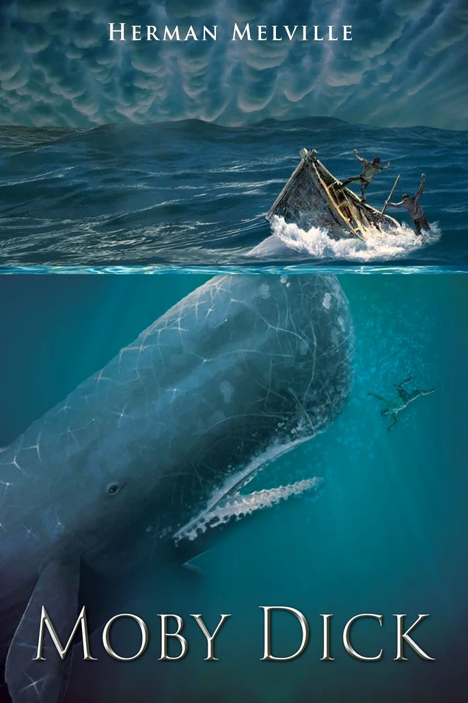

Moby Dick

Versão definitiva da obra-prima Moby Dick, ou A Baleia, considerado um dos maiores romances norte-americanos. O livro traz o relato de um marinheiro letrado, Ishmael, sobre a última viagem de um navio baleeiro de Nantucket, o Pequod, que parte da costa leste dos Estados Unidos - com sua tripulação multiétnica - rumo ao Pacífico Sul, onde encontra o imenso cachalote branco que, no passado, arrancara a perna do vingativo capitão Ahab. Ao longo de 135 capítulos, Herman Melville (1819-1891) explora com brilhantismo e ironia os mais variados gêneros literários: da narrativa de viagens ao teatro shakespeareano, do sermão à poesia popular, passando pela descrição científica e a meditação filosófica.
Clique para ser redirecionado para o link de Download